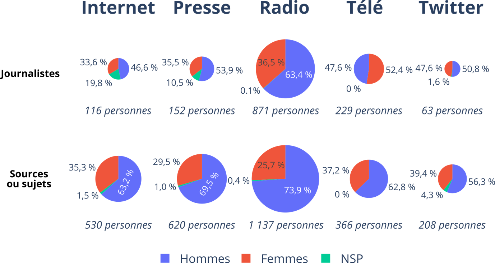

Bienvenue sur la page d'accueil
Les réseaux sociaux façonnent nos perceptions des genres. Découvrez comment les images diffusées en ligne influencent les stéréotypes et creusent les inégalités.
Sujet : Comment les images des hommes et des femmes sur les réseaux sociaux renforcent-elles les stéréotypes et les inégalités entre les genres ?

Les réseaux sociaux sont devenus un reflet puissant de notre société, influençant notre perception des rôles et des identités de genre. Cependant, ces plateformes diffusent souvent des images qui perpétuent des stéréotypes et des inégalités entre les hommes et les femmes.
À travers ce projet, nous analysons comment ces représentations impactent la perception des genres et alimentent les inégalités sociales. Notre objectif est de sensibiliser à ces enjeux et de promouvoir une représentation plus juste et équilibrée des hommes et des femmes dans l’espace numérique.
Page d'interview
Retrouvez ici les témoignages et analyses d'experts sur l'impact des réseaux sociaux sur l'image des hommes et des femmes.
À propos du projet citoyen
Notre projet citoyen explore comment les images des hommes et des femmes sur les réseaux sociaux renforcent les stéréotypes de genre et alimentent les inégalités. En analysant les représentations véhiculées en ligne, nous mettons en lumière les biais inconscients et leurs conséquences sur la perception des rôles sociaux.
Notre Équipe
CF
PC
RL
RB
Nos Motivations
Nous sommes passionnés par l'égalité des genres et nous croyons fermement que les réseaux sociaux jouent un rôle crucial dans la formation des perceptions de genre. Notre objectif est de sensibiliser le public aux stéréotypes de genre et de promouvoir des représentations plus équilibrées et justes des hommes et des femmes en ligne. En travaillant avec des associations et en menant des recherches approfondies, nous espérons contribuer à un changement positif dans la société.
Sondage
Découvrez les résultats de nos enquêtes sur la perception des stéréotypes de genre en ligne.
-
Les hommes et les femmes sont-ils représentés de manière égale dans les médias ?

-
Les personnages masculins et féminins occupent-ils des rôles différents ?

-
Les femmes sont-elles souvent valorisées pour leur apparence plutôt que leurs compétences ?

-
Les hommes sont-ils souvent représentés comme forts, autoritaires, ou émotionnellement réservés ?

-
Les médias influencent-ils la perception des rôles traditionnels de genre ?

-
Avez-vous ressenti une pression à vous conformer à des attentes de genre à cause des médias ?

-
Les médias influencent-ils les choix de carrière des jeunes ?

-
Les médias représentent-ils suffisamment de femmes en leadership ?

-
Les médias reflètent-ils la diversité des genres de manière équilibrée ?

-
La représentation des genres dans les médias a-t-elle évolué positivement ?

-
Les médias influencent-ils la perception des rôles traditionnels de genre ?

Association
Voici les différentes associations engagées pour l'égalité des genres sur les réseaux sociaux que nous avons contactées.
ONU Femmes (UN Women)
Planning Familial
Osez le Féminisme
Réponse de l’association “Osez le Féminisme” :
Les hommes et les femmes sont-ils représentés de manière égale dans les médias ? Non ! Les hommes monopolisent l’espace médiatique en tant qu’experts et leaders, reléguant les femmes à des rôles secondaires.
Les personnages masculins et féminins occupent-ils des rôles différents ? Oui, les femmes sont encore cantonnées à des rôles subalternes et stéréotypés (mères, épouses, objets de désir), tandis que les hommes incarnent le pouvoir et l’action.
Les femmes sont-elles souvent valorisées pour leur apparence plutôt que leurs compétences ? Absolument ! La dictature de l’apparence féminine dans les médias dévalorise les compétences des femmes et alimente leur objectification.
Les hommes sont-ils souvent représentés comme forts, autoritaires ou émotionnellement réservés ? Oui, la virilité toxique est omniprésente. Ce modèle oppressif enferme les hommes dans une image de domination et de répression émotionnelle.
Les médias influencent-ils la perception des rôles traditionnels de genre ? Oui, ils fabriquent et perpétuent des normes sexistes en présentant des rôles genrés comme "naturels", légitimant ainsi les inégalités.
Avez-vous ressenti une pression à vous conformer à des attentes de genre à cause des médias ? Oui, les femmes subissent des injonctions constantes à correspondre aux standards de beauté et aux rôles attendus, générant insécurité et mal-être.
Les médias influencent-ils les choix de carrière des jeunes ? Oui, le manque de modèles féminins dans certains métiers limite les ambitions des filles et entretient la ségrégation professionnelle.
Les médias représentent-ils suffisamment de femmes en leadership ? Non ! Les femmes dirigeantes restent invisibilisées ou réduites à des considérations superficielles, renforçant l’idée que le pouvoir est masculin.
La Fondation des Femmes
Chayn
Geena Davis Institute
End Rape on Campus (EROC)
Osez le Féminisme
Réponse de l’association “Fondation des Femmes” :
Les hommes et les femmes sont-ils représentés de manière égale dans les médias ? Non, la représentation reste profondément inégale. Les femmes sont sous-représentées dans les médias, tant en termes de temps de parole que de présence à l'écran. Cette disparité est particulièrement marquée dans certains domaines comme l'expertise et le sport, où la présence féminine est encore plus réduite. Cette sous-représentation contribue à l'invisibilisation des femmes dans l'espace public et renforce les inégalités existantes.
Bilan
Voici un aperçu de ce qui a été fait et ce qui reste à faire pour promouvoir l'égalité des genres sur les réseaux sociaux.
1. Ce qui a déjà été fait
📊 Études et rapports
Les recherches démontrent que les réseaux sociaux jouent un rôle clé dans la reproduction des stéréotypes de genre. Les algorithmes favorisent les contenus qui renforcent les normes de beauté féminine et la virilité masculine.
- Les algorithmes biaisés : TikTok, Instagram et YouTube promeuvent les contenus les plus engageants, souvent basés sur des stéréotypes.
- Surreprésentation des normes : Les hommes sont souvent montrés comme forts et ambitieux, tandis que les femmes sont hypersexualisées ou cantonnées aux rôles familiaux.
Les ONG comme l’UNESCO et ONU Femmes soulignent que les représentations des femmes sur les réseaux sociaux sont souvent réduites à des rôles secondaires ou sexualisés.
📢 Mouvements et campagnes
Des initiatives citoyennes et militantes émergent pour lutter contre ces inégalités :
- #BodyPositive : Mouvement prônant l’acceptation de toutes les morphologies et dénonçant les standards de beauté irréalistes.
- #LikeAGirl : Campagne transformant une insulte en message de force et d’empowerment féminin.
- Stop Cybersexism : Organisation sensibilisant aux violences et stéréotypes de genre en ligne.
🛑 Régulation et modération
Les plateformes sociales ont mis en place des politiques de modération, mais celles-ci sont souvent insuffisantes :
- Instagram et TikTok suppriment les contenus discriminants, mais leur algorithme continue de promouvoir des images sexistes.
- En France, le label "Égalité numérique" encourage une représentation plus équitable.
2. Ce qui reste à faire
🛠 Analyser les algorithmes
Les algorithmes influencent largement le contenu visible en ligne. Il est nécessaire de :
- Étudier comment les recommandations sont générées sur les réseaux sociaux.
- Créer des outils d’audit pour identifier les biais algorithmiques.
🗣 Explorer les témoignages
Illustrer l’impact des stéréotypes par des témoignages permet de mieux comprendre leurs effets concrets :
- Interviewer des influenceurs et influenceuses sur leurs expériences.
- Recueillir des témoignages anonymes via des sondages.
💡 Proposer des solutions
Des actions concrètes doivent être mises en place :
- Intégrer l’éducation numérique dans les programmes scolaires.
- Développer des algorithmes plus inclusifs qui favorisent une diversité d’images et de contenus.
🎨 Création de contenus alternatifs
Promouvoir des images et représentations alternatives est essentiel :
- Encourager les influenceurs et marques à partager des contenus diversifiés.
- Lancer des campagnes visuelles mettant en avant l’inclusion et l’égalité.